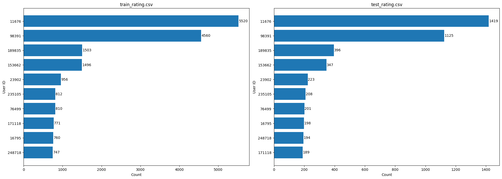
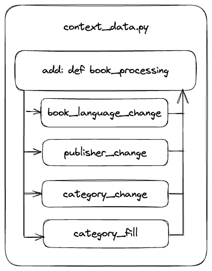
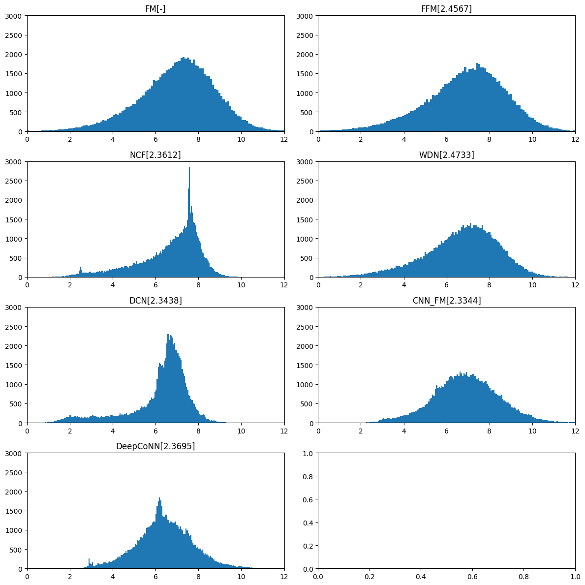
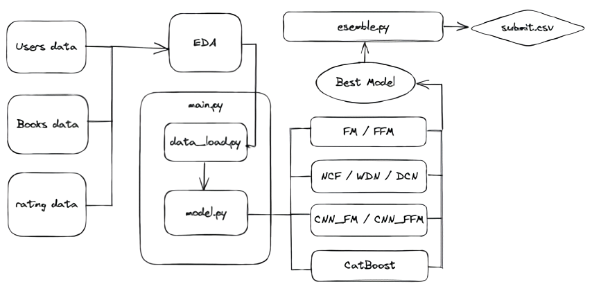
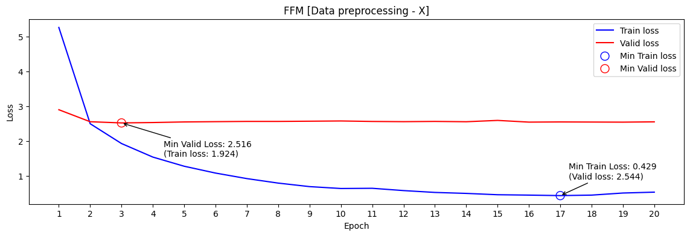
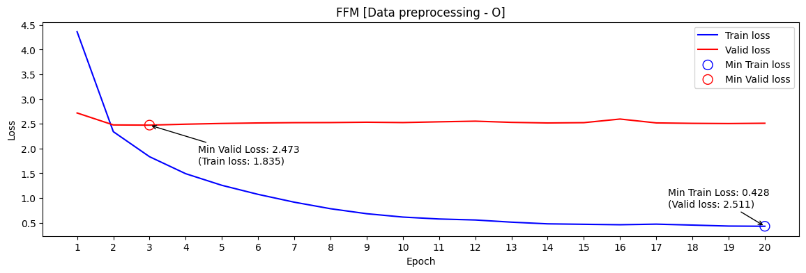
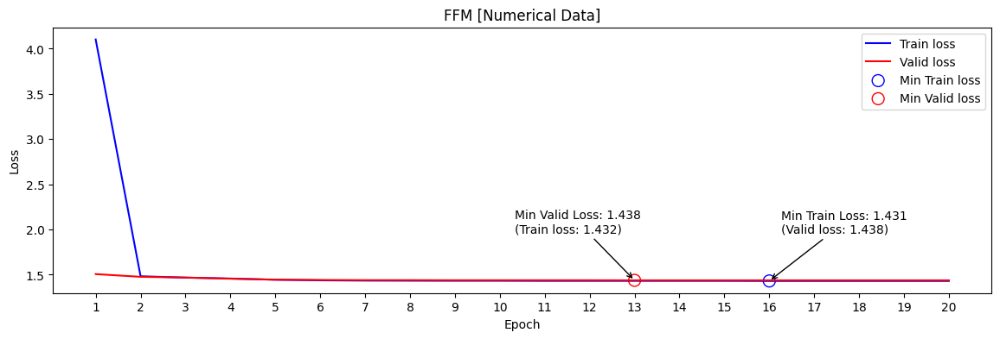
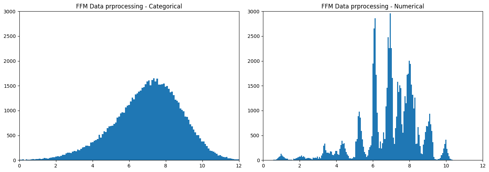
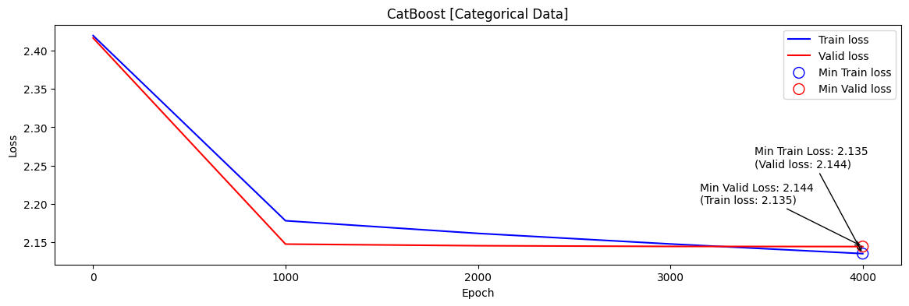

[Wrap_up] 도메인 기초 대회
- [Wrap_up] 도메인 기초 대회
- 개발 환경
OS : ubuntu 18.04.5 LTS
GPU : Tesla V100-SXM2-32GB
cuda : 11.0.0- version
python: 3.8.5 torch: 1.7.1
numpy: 1.20.3
pandas: 2.0.0
scikit-learn: 1.2.2
matplotlib: 3.7.1CatBoost: 1.1.1 - base
base model : ‘FM’, ‘FFM’, ‘NCF’, ‘WDN’, ‘DCN’, ‘CNN_FM’, ‘DeepCoNN’
base loss_fn : ‘MSE’, ‘RMSE’
base optimizer : ‘SGD’, ‘ADAM’- 추가로 적용 해본것
model : ‘CatBoost’
loss_fn : ‘Huber Loss[pytorch : SmoothL1Loss()]’
optimizer : ‘Adagrad’
01_ 데이터 schema
-
[train, test]_rating.csv : train_rating.csv
user_id isbn rating 0 8 0002136721 2 1 12 0060154323 9 2 234 0374255432 8 3 345 0399573326 4 4 4567 0425125963 6 -
users.csv
user_id location age 0 8 timmins, ontario, canada nan 1 12 ottawa, ontario, canada 49 2 234 n/a, n/a, n/a nan 3 345 toronto, ontario, canada 30 4 4567 victoria, british, canada 36 -
books.csv
isbn book_title book_author year_of_publication publisher img_url language category summary img_path 0 0002… book_a auth_a 2000 pub_a … en [‘Actresses’] … … 1 0060… book_b auth_b 1991 pub_b … en [‘Fiction’] … … 2 0374… book_c auth_c 1999 pub_c … en [‘Medical’] … … 3 0399… book_d auth_d 1991 pub_d … en [‘Fiction’] … … 4 0425… book_e auth_e 2000 pub_e … en [‘History’] … … *_rating.csv를 기반으로
user_id-> user.csv,isbn-> books.csv를 기반으로 train/test데이터를 구성한다 -
Example - train data [context_data]
- drop columns :
img_url,impg_path,year_of_publication,summary- ‘location’ : location.split() ->
location_city,location_state,location_countryuser_id isbn age location_city location_state location_country category publisher language book_author rating 0 8 0002… nan timmins ontario canada [‘Actresses’] pub_a en auth_a 2 1 12 0060… 49 ottawa ontario canada [‘Fiction’] pub_b en auth_b 9 2 234 0374… nan n/a n/a n/a [‘Medical’] pub_c en auth_c 8 3 345 0399… 30 toronto ontario canada [‘Fiction’] pub_d en auth_d 4 4 4567 0425… 36 victoria british canada [‘History’] pub_e en auth_e 6
02_ EDA
02_01 결측치 확인
| users.csv | train_ratings.csv | books.csv | test_ratings.csv |
|---|---|---|---|
| [ data_size: 68092 ] | [ data_size: 306795 ] | [ data_size: 149570 ] | [ data_size: 76699 ] |
| user_id 0 location 0 age 27833 dtype: int64 |
user_id 0 isbn 0 rating 0 dtype: int64 |
isbn 0 book_title 0 book_author 1 year_of_publication 0 publisher 0 img_url 0 language 67227 category 68851 summary 67227 img_path 0 dtype: int64 |
user_id 0 isbn 0 rating 0 dtype: int64 |
users data는 68092, books data는 149570개 rating data는 306795개 존재
- users, books data 대비 rating data 부족
- 딥러닝 기반 모델에 학습데이터로 사용했을 경우 성능 개선이 어려울 것이라 예상
02_02 users.csv
-
age 전처리
def age_map(x: int) -> int: x = int(x) if x < 20: return 1 elif x >= 20 and x < 30: return 2 ... else: return 6 ... train_df['age'] = train_df['age'].fillna(int(train_df['age'].mean())) train_df['age'] = train_df['age'].apply(age_map) test_df['age'] = test_df['age'].fillna(int(test_df['age'].mean())) test_df['age'] = test_df['age'].apply(age_map) ...train_df와 test_df의 평균 age로 각각 결측치를 처리한 다음 age_map함수를 통해 age를 범주화 시킨다
-
location 전처리
location을 city, state, country로 분리
users['location_city'] = users['location'].apply(lambda x: x.split(',')[0]) users['location_state'] = users['location'].apply(lambda x: x.split(',')[1]) users['location_country'] = users['location'].apply(lambda x: x.split(',')[2])분리시 결측치 생성됨
`toronto,n/a,canada -> location_city: toronto, location_state: n/a, location_country: canada결측치가 없는 국가들을 데이터프레임으로 추출하여 결측치와 비교 후 데이터 입력
-
채우는 순서는 location_city, location_state, location_country순으로 우선하여 채움
[상향식으로 채우는 것이 정확도가 더 높다. - city가 주어질 경우 city에서 country를 맞추는 것이 country에서 city를 맞추는 것보다 더 정확하다] -
1번 규칙을 지키며 우선 적으로 결측치가 1개인 행들을 채우고 결측치가 2개인 행들을 채운다
-
02_03 train_rating.csv / test_rating.csv,

heavy users를 보았을 떄, train과 test data 구성이 유사한 것으로 파악
02_04 books.csv
- books_preprocessing 함수 추가

-
language [book_language_change]
isbn으로 국가를 파악
Reference : List of ISBN registration groups
전처리를 위해 isbn 앞자리를 기준으로 같은 앞자리를 가진 book들의 language의 값의 개수를 측정하여 가장 많은 값을 가진 언어를 대표로 딕셔너리를 생성하여 결측치의 language를 채움
books_isbn_language = {'00': 'en', '03': 'en', '04': 'en', '06': 'en', '07': 'en', '08': 'en', '15': 'en', ... -
publisher [publisher_change]
isbn으로 출판사 파악
4번째 자리까지 동일시 같은 출판사로 통일 (대략적으로 4자리까지 동일한 경우 같은 출판사로 파악)
같은 출판사를 약간씩 다르게 표현한 경우가 많아 publisher를 새롭게 전처리
book_pub = {'0002': 'HarperFlamingo Canada', '0060': 'HarperPerennial', '0374': 'Farrar Straus Giroux', '0399': 'Putnam Pub Group', '0425': 'Berkley Publishing Group', '0671': 'Audioworks', ... -
category [category_change, category_fill]
-
category_change
상위 50개의 카테고리를 추출하여 역순으로 비교하여 상위 카테고리 리스트에 값이 있을 경우 해당 카테고리로 값을 변경하고, 같은 카테고리를 가진 항목이 50이하인 책들의 카테고리를 others로 변경
for category in categories: books.loc[books['category'].str.contains(category, case=False), 'category'] = category others_list = category_df[category_df['count']<50]['category'].values books.loc[books[books['category'].isin(others_list)].index, 'category']='others' -
category_fill
book_author를 기준으로 해당 author가 가장 많이 작성한 장르의 책을 대표 category로 dict를 생성
name_dict = {'Stephen King': 'fiction', 'Agatha Christie': 'fiction', 'William Shakespeare': 'drama', 'Barbara Cartland': 'fiction',...해당 dict를 기반으로 결측치를 채우고 채워지지 않는 결측치들을 other로 처리
-
03_ BaseModel predict 분포
전처리, parameter 변경 없는 기본 모델
predict 데이터 분포와 public test RMSE 결과

- 모델별 특징
- FM - context_data를 메인으로 학습
FM은 모든 정보를 one-hot encoding 한 뒤 Latent Factor Model을 이용해 변수를 축약
-
FFM - context_data를 메인으로 학습
feature마다 자신이 속한 필드 이외에 여러 개의 잠재 벡터를 가짐
Latent Factor 구성 시 대응되는 field를 미리 고려하여, 대응되는 field와만 상호작용을 계산
FM과 다르게 필드별로 여러 개의 잠재 벡터를 가짐 -
NCF, WDN, DCN - dl_data를 메인으로 학습 _ traindata :
user_id,isbn으로 구성모델 특징 NCF MLP를 이용해 선형조합보다 더 다양한 정보를 학습할 수 있게 설계 WDN DNN과 동시에 WNN을 학습하여 두 네트워크 구조의 장점을 가지는 방법
sparse, dense 두가지 대표 특성을 학습DCN 변수의 상호작용을 자동적, 효율적으로 가능하게 하는 구조 제안
총 깊이와 교차 변수들의 차수가 커질수록 명시적 변수들의 상호관계를 효율적으로 학습 -
CNN_FM - image_data를 메인으로 학습
상품에 대한 이미지 정보를 활용한 추천 모델
상품 이미지와 같은 비정형 데이터 특징을 추출하기 위해 Convolutional Neural Network 사용 -
DeapCoNN
사전 학습된 BERT를 사용하여 리뷰 데이터와 같은 비정형 데이터 특징을 추출하기 위해서 사전 학습된 언어 모델을 사용합니다
하지만 총 149570의 book data중 summary 결측치가 67227개로 상당수 차지하고 있어, 모델을 적용하기에 적합하지 않다고 판단하였고, 실제로도 성능적인 아쉬움까지 이어졌습니다.
- 모델 결정 [FM, FFM]
- 룰베이스 RMSE
ratings * user_id0.642556 * isbn0.709715 age 0.083359 location_city 0.373939 location_state 0.179588 location_country 0.077136 category 0.056237 publisher 0.139969 language 0.042713 book_author 0.508389 ratings를 기준으로 상관 관계를 파악 했을 때 상위 2가지 feature인 user_id, isbn을 선택하여 룰베이스를 적용하였다
user_id별로 해당유저가 부여하는 평점 평균 딕셔너리, isbn에 따른 평점 평균을 딕셔너리로 저장하였고, test 데이터셋에서 없는 user_id나 isbn을 호출하였을 때에는 전체 평균값을 채우도록하여 결측치를 처리하였다
ratings = (user_id + isbn) / 2로 예측을 채워서 Rule-Based 결과를 제출하였을 때에 2.2581으로 기본 베이스 모델보다 성능이 높게 나왔다
그래서 전체 context 데이터를 학습하는 FM / FFM 모델이 피쳐 튜닝을 잘 진행하면 성능이 향상될 여지가 더 많다고 판단하고 두 모델을 집중적으로 진행하였다
04_ 프로젝트 FlowChart

05_ 최종 Dataset
05_01 categorical [train/test] dataset
피처당 같은 value들을 index화 해서 데이터를 범주화한 데이터 셋
| index | user_id | isbn | rating | age | location_city | location_state | location_country | category | publisher | language | book_author |
|---|---|---|---|---|---|---|---|---|---|---|---|
| 0 | 0 | 0 | 4 | 3 | 0 | 0 | 0 | 0 | 0 | 0 | 0 |
| 1 | 1 | 0 | 7 | 3 | 1 | 0 | 0 | 0 | 0 | 0 | 0 |
| 2 | 2 | 0 | 8 | 3 | 2 | 0 | 0 | 0 | 0 | 0 | 0 |
| 3 | 3 | 0 | 8 | 3 | 3 | 0 | 0 | 0 | 0 | 0 | 0 |
| 4 | 4 | 0 | 9 | 3 | 4 | 0 | 0 | 0 | 0 | 0 | 0 |
| … | … | … | … | … | … | … | … | … | … | … | … |
| 306790 | 6313 | 129772 | 7 | 2 | 1606 | 5 | 1 | 0 | 5 | 0 | 1272 |
| 306791 | 1879 | 129773 | 6 | 3 | 19 | 10 | 1 | 6 | 29 | 0 | 69 |
| 306792 | 1879 | 129774 | 7 | 3 | 19 | 10 | 1 | 0 | 188 | 0 | 54713 |
| 306793 | 1879 | 129775 | 7 | 3 | 19 | 10 | 1 | 2 | 118 | 0 | 54714 |
| 306794 | 1879 | 129776 | 10 | 3 | 19 | 10 | 1 | 0 | 41 | 0 | 54715 |
05_02 numerical [train / test] dataset
피쳐당 같은 value들의 rating을 평균을 내서 수치화한 데이터 셋
- 전처리 규칙
user_id : 0이 4개 있다고 가정 각각의 rating은 user_id {0 : [7,8,9,10], ...} user_id 0의 평점 평균은 8.5 user_id { 0 : 8.5, ...}로 변경 이러한 규칙으로 나머지 feature들도 동일하게 수치화하여 데이터 전처리
| index | user_id | isbn | rating | age | location_city | location_state | location_country | category | publisher | language | book_author |
|---|---|---|---|---|---|---|---|---|---|---|---|
| 0 | 4.42857 | 6.857143 | 4 | 6.883493 | 6.266667 | 6.980202 | 6.934104 | 7.020942 | 7.091387 | 7.091387 | 6.857143 |
| 1 | 7.285714 | 6.857143 | 7 | 6.883493 | 6.823871 | 6.980202 | 6.934104 | 7.020942 | 7.091387 | 7.091387 | 6.857143 |
| 2 | 8.000000 | 6.857143 | 8 | 6.883493 | 6.782609 | 6.980202 | 6.934104 | 7.020942 | 7.091387 | 7.091387 | 6.857143 |
| 3 | 8.000000 | 6.857143 | 8 | 6.883493 | 8.000000 | 6.980202 | 6.934104 | 7.020942 | 7.091387 | 7.091387 | 6.857143 |
| 4 | 8.400000 | 6.857143 | 9 | 6.883493 | 7.293103 | 6.980202 | 6.934104 | 7.020942 | 7.091387 | 7.091387 | 6.857143 |
| … | … | … | … | … | … | … | … | … | … | … | … |
| 306790 | 8.000000 | 7.000000 | 7 | 7.244307 | 7.733333 | 7.104575 | 7.117356 | 6.974887 | 7.105181 | 7.091387 | 6.076923 |
| 306791 | 5.833333 | 6.000000 | 6 | 6.883493 | 6.744807 | 7.115454 | 7.117356 | 7.387309 | 6.931951 | 7.091387 | 5.827586 |
| 306792 | 5.833333 | 7.000000 | 7 | 6.883493 | 6.744807 | 7.115454 | 7.117356 | 6.974887 | 6.569892 | 7.091387 | 7.000000 |
| 306793 | 5.833333 | 7.000000 | 7 | 6.883493 | 6.744807 | 7.115454 | 7.117356 | 7.055849 | 6.760032 | 7.091387 | 7.000000 |
| 306794 | 5.833333 | 10.00000 | 10 | 6.883493 | 6.744807 | 7.115454 | 7.117356 | 6.974887 | 7.457627 | 7.091387 | 10.00000 |
06_ FM / FFM / CatBoost
- 용어 정리
min valid loss[RMSE] - 학습중 최소 손실
public score[RMSE] - ai stage 제출 점수
06_01 FFM
같은 데이터와 하이퍼파라미터로 학습 하였을 때 FFM 모델이 FM모델보다 public score가 높게 측정 되었습니다
FM은 모든 latent vetor간 interaction을 하나의 vector로 표현하는 한계를 FFM은 필드마다 latent vector를 만들어 개선했기 때문으로 파악하였기 때문에 FFM 모델을 중심으로 시각화를 진행하겠습니다
- FFM 데이터 전처리 X
min valid loss[RMSE] : 2.516 / public score[RMSE] : 2.4913

- FFM 데이터 전처리 O
min valid loss[RMSE] : 2.473 / public score[RMSE] : 2.4567

- FFM 데이터 전처리 O [Categorical -> Numerical]
min valid loss[RMSE] : 1.428 / public score[RMSE] : 2.3943

- test dataset rating 분포
학습을 진행하면서 categorical dataset을 통해 FFM을 학습하면서 임의로 매겨진 index 규칙에 따라서 전처리된 학습 데이터셋을 입력하는 것에 대해서 의문이 생겼고, 각각의 value에 따라서 평균값을 이용한 Rule-Based를 적용했을 때 성능이 좋았던 것을 기억하여, categorical dataset을 numerical dataset으로 변경하자는 아이디어를 적용했습니다
데이터셋 형식의 변화로 2.4567 -> 2.3943의 성능향상이 일어났고 분포 또한 rating을 특징을 잘 파악 할수 있는 분포로 변경되었습니다
06_02 CatBoost
범주형(categorical) 데이터를 처리하기 위한 부스팅 알고리즘
CatBoost는 범주형 데이터를 자동으로 처리하여 모델 성능을 향상시키는데 기여, 이때 중요한 파라미터 중 하나가
cat_features
cat_features는 CatBoost 모델에서 범주형 데이터의 열 인덱스를 지정하는 파라미터이며,cat_features에는 범주형 열의 인덱스나 열 이름을 포함하는 리스트를 전달할 수 있다.
CatBoost는cat_features에 지정된 열을 범주형 데이터로 간주하고, 자동으로 원핫인코딩을 수행하거나, 이를 위한 특별한 분기 방법을 사용그래서 CatBoost는
cat_features를 사용하여 범주형 데이터에 대한 특별한 처리를 수행하므로, 범주형 데이터를 미리 원핫인코딩하지 않아도 된다.
따라서,cat_features를 지정함으로써, 머신러닝 모델 구축에 필요한 전처리 과정을 줄일 수 있다.
- 하이퍼파라미터
cat_features 설정 public score[RMSE] X 2.3975 O 2.1539
- Catboost [데이터 전처리 : O, cat_features : O]
min valid loss[RMSE] : 2.144 / public score[RMSE] : 2.1539

- 프로젝트 수행결과
상위 3명의 모델을 앙상블을 하여 제출하였습니다
CatBoost : CatBoost : CNN_FFM = 1 : 1 : 1 -> 2.1359 (public score[RMSE])
EDA 과정에서 예상 했던 것 처럼, users, books data 대비 rating data 부족한 문제 때문에 딥러닝의 성능이 머신러닝에 비해서 떨어진것 같다고 파악하였습니다
데이터가 좀 더 다양해지고 늘어난다면 딥러닝도 좋은 성능을 보일 것으로 예상합니다
회고
-
학습 목표
이번에는 첫 추천 시스템 프로젝트이므로 데이터의 전처리와 예측 모델 알고리즘을 파악하는 것을 목표로 하였다.
-
시도한 개선 방식
결측치를 채우는 데이터 전처리를 하였을 때는 FM model은 2.463 -> 2.418, FFM model은 2.516 -> 2.473의 min valid loss 변화가 있었다.
Categorical 데이터로 이루어진 데이터를 각각의 피처에 따라 레이팅의 평균으로 매칭하여 전처리한 결과로 numerical 데이터로 전처리 했을 때에는 valid loss가 FM - 1.446, FFM - 1.438으로 큰 차이가 있었지만 실제 테스트 결과로는 RMSE가 2.3대로 Categorical 데이터로 처리했을 때의 RMSE인 2.4보다는 향상되었다.
Catboost Regression의 파라미터 cat_feature을 활용하여 Categorical데이터 표적 학습을 한 결과 RMSE가 2.15를 달성하였다. 머신러닝은 딥러닝에 비해 범주형 데이터를 더 잘 처리하였다.
-
다음 프로젝트에서 시도해볼 것
context data를 처리하는 부분에서는 FFM도 좋은 성능을 보일 것으로 예상된다.
book recommend project에서는 데이터의 양이 딥러닝 모델을 적용하기에 충분하지 않았었던 것으로 파악을 하였다.cold start문제를 해결하기 위해 이미 Categorical 데이터로 주어진 부분은 머신러닝 기법인 catboost를 활용하고, 새로 주어진 데이터는 numerical 데이터로 학습한 딥러닝 모델을 활용하여 하이브리드 모델을 구성하는 것을 목표로 하였다.
WandB를 통한 결과 기록
-
학습 과정에서의 교훈
Git을 통해서 버전 관리를 초기에 빠르게 시작 했어야 했다. 중간에 일정이상 진행된 상태로 팀원들과 코드를 합치려는 과정에서 어려움을 겪었다.
성능만을 높이기 위한 앙상블보다는 데이터를 파악하고 서로 다른 모델끼리 부족한 점을 보완할 수 있도록 앙상블을 진행하여야 된다.
데이터 전처리와 모델에 집중하는 것 외에도 ColdStart문제를 해결하는 것도 성능 향상에 영향을 준다
댓글남기기